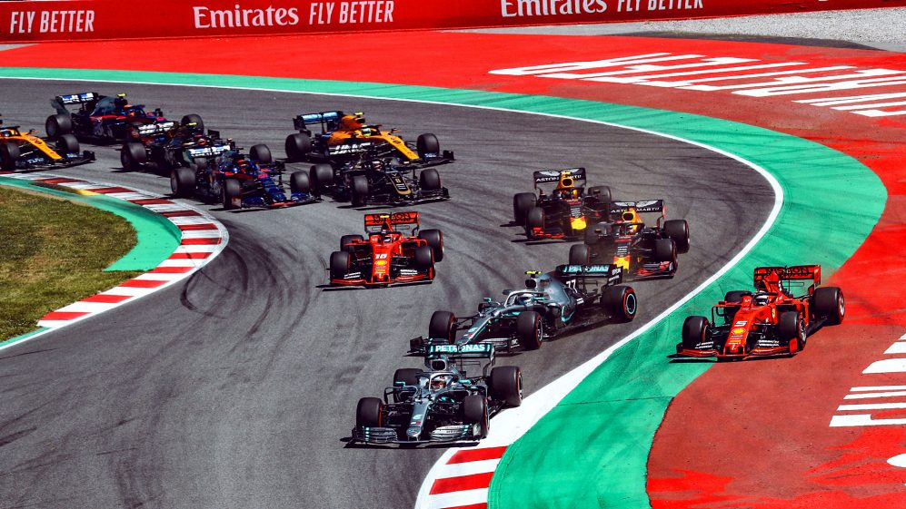
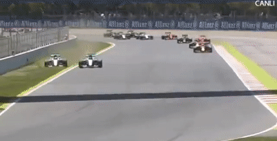
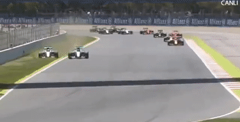

SPANISH GRAND PRIX
Cicuit Length:
4,655 km (2.892 mi)
Turns:
16
Number of Laps:
66
First Grand Prix:
1991
Race Distance:
307,104 km
Spains race takes place in the city of Barcelona. Barcelona is a city in Spain,
about 5,6 Million people live in Barcelona. And across Spain live about 46,9 Million inhabitants. So far the record holder
of this circuit is Daniel Ricciardo. This year (2021) the race will be on May 9. The fastest speed last year (2019) was measured at 325 km/h.
The Spanish Grand Prix is often the fourth event of the Formula 1 of the Calendar year.


Winners of the Spanish GP
2020 - Lewis Hamilton
2019 - Lewis Hamilton
2018 - Lewis Hamilton
2017 - Lewis Hamilton
2016 - Max Verstappen
2015 - Nico Rosberg
2014 - Lewis Hamilton
2013 - Fernando Alonso
2012 - Pastor Maldonado
2011 - Sebastian Vettel
2010 - Mark Webber
2009 - Jenson Button
2008 - Kimi Räikkönen
2007 - Felipe Massa